Análisis Exploratorio de Datos
Procesamiento de Datos
Debido al uso de datos de diferente origen, es necesario limpiar, organizar y fusionar los conjuntos de datos usados. Esto inclye procesamiento de algunas columnas como la columna Date del dataset de temperaturas anómalas e identificar agrupaciones de países y variables de interes.
temperature_data$year = as.integer(substr(temperature_data$Date, 1, 4))
temperature_data$month = as.integer(substr(temperature_data$Date, 5, 6))
gdp_data <- climate_change_data %>%
filter(`Series code` %in% c("NY.GDP.MKTP.CD", "SP.POP.TOTL")) %>%
pivot_longer(
cols = (ncol(.)-21):ncol(.),
names_to = "Year",
values_to = "Value"
) %>%
select(-`Series code`, -SCALE, -Decimals) %>%
pivot_wider(
names_from = `Series name`,
values_from = Value
) %>%
mutate(`GDP ($)` = as.numeric(`GDP ($)`)) %>%
mutate(`Population` = as.numeric(`Population`)) %>%
mutate(`Year` = as.integer(`Year`)) %>%
mutate(gdp_per_capita = `GDP ($)`/Population)
yearly_average <- temperature_data %>% summarise(mean_temperature = mean(Anomaly), .by=year)
emissions_data$Code <- as.factor(emissions_data$Code)
emissions_data %>%
distinct(Entity, Code) -> distinct_codes
gdp_data %>%
inner_join(emissions_data, by=c("Year", "Country code" = "Code")) %>%
drop_na() %>% select(`Country code`, "Country" = `Country name`, Year, "GDP" = `GDP ($)`, Population, "GDP per Capita"=gdp_per_capita, "Annual CO2 emissions" = `Annual CO₂ emissions`) -> gdp_joined_data
distinct_codes %>% filter(startsWith(as.character(Code), "OWID") | is.na(Code)) -> special_categories
income_codes <- special_categories %>% filter(grepl("income", as.character(Entity), ignore.case = TRUE))
income_data <- emissions_data %>% filter(Code %in% income_codes$Code) %>% left_join(emissions_per_capita_data, by = c("Code", "Entity", "Year"))
colnames(income_data) <- c("Entity", "Code", "Year", "CO2 emissions", "CO2 per capita")Relación histórica entre emisiones de CO2 y aumento de la temperatura promedio global.
A continuación, se presenta una gráfica 1 con el comportamiento histórico de las emisiones totales de CO2 a través de los años. Adicionalmente, se incluye en el mismo gráfico el comportamiento anual de la temperatura anómala durante el mismo periodo de tiempo. El análisis de la gráfica revela una clara correlación positiva y estrecha entre las emisiones totales de CO2 y el incremento de la temperatura global, mostrando trayectorias que aparecen prácticamente superpuestas a lo largo del registro histórico.
Se observa un patrón de crecimiento acelerado en ambas variables durante los últimos cincuenta años, periodo en el cual han aumentado rápidamente sin alcanzar aún su pico máximo. Esta tendencia ascendente ha impulsado la temperatura media global hasta alcanzar anomalías de aproximadamente 1.3°C en comparación con los niveles preindustriales.
Diferencias resaltables entre ambas curvas pueden ser que mientras que la curva de emisiones totales presenta un comportamiento sostenido y suave, la temperatura manifiesta una mayor variabilidad natural año tras año, aunque sigue fielmente la tendencia de crecimiento exponencial.
En la figura 2, se puede visualizar directamente la correlación entre ambas variables. Se evidencia una clara relación lineal positiva que complementa lo prensentado en la primera gráfica.
world_co2 <- emissions_data %>% filter(Code == "OWID_WRL")
world_per_capita <- emissions_per_capita_data %>% filter(Code == "OWID_WRL")
yearly_data <- yearly_average %>%
left_join(world_co2, by = c("year" = "Year")) %>%
select(-Entity, - Code) %>%
left_join(world_per_capita, by = c("year" = "Year")) %>%
select(-Entity, - Code)
colnames(yearly_data) <- c("year", "mean_temperature_anomaly", "CO2_emissions", "CO2 per capita")
scale_factor <- max(yearly_data$CO2_emissions, na.rm = TRUE) / max(yearly_data$mean_temperature_anomaly, na.rm = TRUE)ggplot(yearly_data, aes(x = year)) +
geom_point(aes(y = CO2_emissions, color = "Emisiones de CO~2~ (Toneladas)")) +
geom_point(aes(y = mean_temperature_anomaly * scale_factor, color = "Temperatura Anomala (°C)")) +
scale_y_continuous(
name = "CO2 Emissions (Tonnes)",
sec.axis = sec_axis(~ . / scale_factor, name = "Temperatura Anomala (°C)")
) +
labs( x = "Year", color = "Variable", title = "Temperatura y emisiones históricas") +
theme_minimal()+
theme(plot.title = element_text(hjust = 0.5))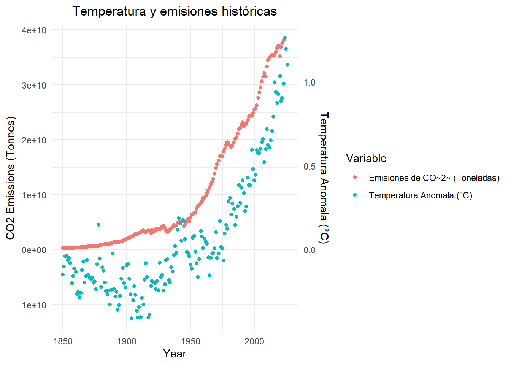
Figure 1: Comportamiento anual de la Emisión total de CO2 y Temperatura Anómala
ggplot(yearly_data, aes(x = CO2_emissions, y = mean_temperature_anomaly)) +
geom_point() +
geom_smooth(method = "lm", se = FALSE) +
labs(
x = "Emisiones de CO2 (Toneladas)",
y = "Temperatura Anomala",
title = "CO2 vs Temperatura Anomala"
) +
theme_minimal()+
theme(plot.title = element_text(hjust = 0.5))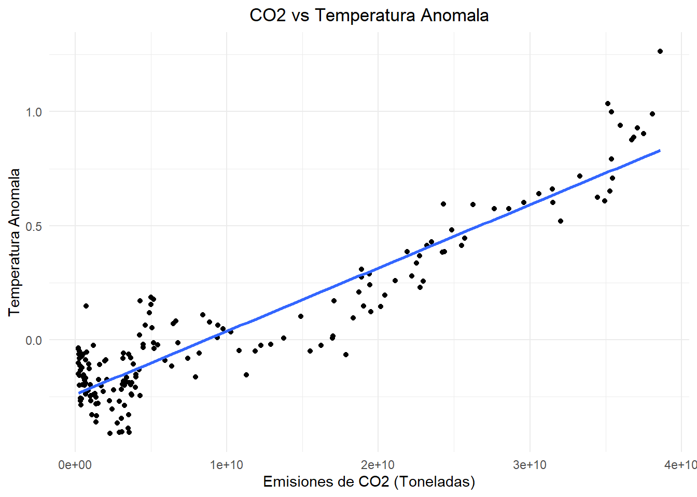
Figure 2: Gráfico de Dispersión de la Emisión Total de CO2 vs Temperatura Anómala
Emisiones de CO2 y el desarrollo ecónomico.
Tras establecer la relación entre las emisiones y el incremento en la temperatura anomala, nuestro análisis continua con la busqueda de una relación entre el desempeño económico de un país y los niveles de emisiones de CO2 que este genera. El análisis histórico revela diferencias estructurales entre grupos de ingreso 3:
- Los países de altos ingresos presentan un crecimiento temprano y acelerado de emisiones per cápita desde el siglo XIX, alcanzando niveles elevados durante el siglo XX, seguido de una leve estabilización o reducción reciente.
- Los países de ingresos medios, especialmente medios-altos, muestran un crecimiento tardío pero pronunciado a partir de mediados del siglo XX, coincidiendo con procesos de industrialización acelerada.
- Los países de bajos ingresos mantienen niveles bajos de emisiones per cápita, con incrementos modestos en algunos casos.
ggplot(income_data, aes(x = Year, y = `CO2 per capita`, color = Entity)) +
geom_line(size = 1) +
labs(
title = "CO2 Emissions per Capita Over Time",
x = "Year",
y = "CO2 Emissions",
color = "Income Group"
) +
theme_minimal()+
theme(plot.title = element_text(hjust = 0.5))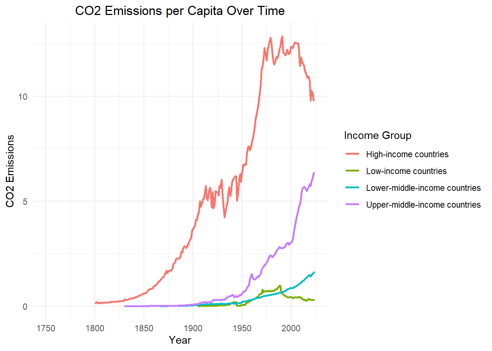
Figure 3: Emisiones per Capita categorizadas por Grupo Económico
El comportamiento de las emisiones totales 4 refuerza los hallazgos anteriores. Los países de ingresos altos dominan las emisiones históricas, con reducciones en los últimos años producto de implementación de medidas de reducción de emisiones. Caso contrario, los países de ingresos medios-altos muestran un crecimiento acelerado, llegando a superar o acercarse a los niveles de los países desarrollados, mostrando que la implementación de medidas de reducción de emisiones no ha sido prioritario en este etipo de países, probablemente ocasionada por la reticencia a impactar su crecimiento económico y verse relegados frente a otros países. Los países de bajos ingresos, finalmente, contribuyen marginalmente al total global.
Se puede establecer, entonces, que la cronología de las emisiones refleja claramente las etapas de industrialización. La industrialización temprana en países desarrollados causaron que históricamente fueran los principales actores en la producción de emisiones, pero que en los últimos tiempos, la industrialización tardía en economías emergentes ha causado un crecimiento en su papel global de generación de emisiones.
ggplot(income_data, aes(x = Year, y = `CO2 emissions`, color = Entity)) +
geom_line(size = 1) +
labs(
title = "CO2 Emissions Total Over Time",
x = "Year",
y = "CO2 Emissions",
color = "Income Group"
) +
theme_minimal()+
theme(plot.title = element_text(hjust = 0.5))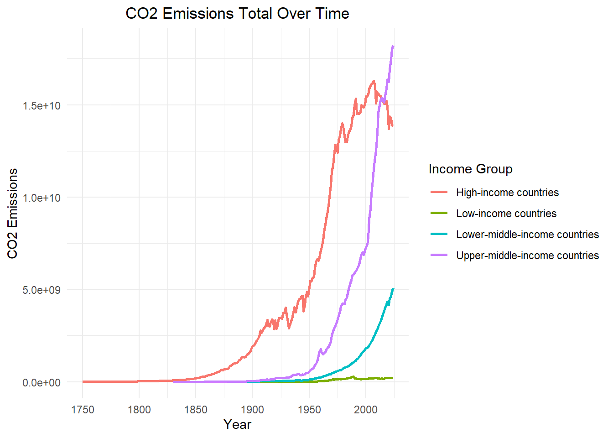
Figure 4: Gráfico de Dispersión de la Emisión Total de CO2 vs Temperatura Anómala
Para complementar este análisis, usamos un diagrama de dispersión entre PIB y emisiones de CO₂, tanto total 5 como per capita 6. Estos diagramas evidencian una relación positiva, aunque con alta dispersión. Las economías de gran escala concentran la mayor parte de las emisiones globales.
Sin embargo, la variabilidad observada indica que no todos los países emiten al mismo nivel. Observamos Existen economías con PIB medio cuyas emisiones superan a las de países con alto PIB, lo que sugiere diferencias en eficiencia energética, matriz energética o políticas ambientales. Pero el panorama global es clara, y la tendencia año a año muestra que los países con mayor poder ecónomico son los principales responsables de la generación de emisiones a nivel global.
ggplot(gdp_joined_data %>% filter(Year %in% c(1990, 2000, 2010)), aes(x = GDP, y = `Annual CO2 emissions`)) +
geom_point() +
geom_smooth(method = "lm", se = FALSE) +
facet_grid(. ~ Year) +
labs(
x = "GDP (USD)",
y = "CO2 Emissions",
title = "GDP vs CO2 a lo largo de los años"
) +
theme_minimal()+
theme(plot.title = element_text(hjust = 0.5))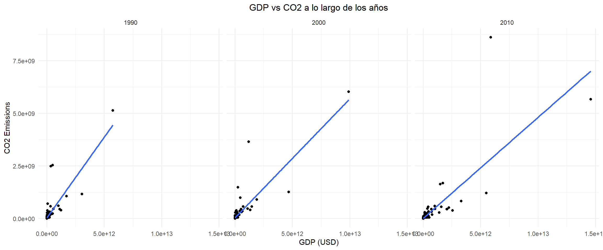
Figure 5: Correlación GDP vs Emisiones de CO2
gdp_joined_data$co2_per_capita = gdp_joined_data$`Annual CO2 emissions`/gdp_joined_data$Population
ggplot(gdp_joined_data %>% filter(Year %in% c(1990, 2000, 2010)), aes(x = `GDP per Capita`, y = co2_per_capita)) +
geom_point() +
geom_smooth(method = "lm", se = FALSE) +
facet_grid(. ~ Year) +
labs(
x = "GDP per Capita (USD per Person)",
y = "CO2 Emissions per capita",
title = "GDP per Capita vs CO2 per capita"
) +
theme_minimal()+
theme(plot.title = element_text(hjust = 0.5))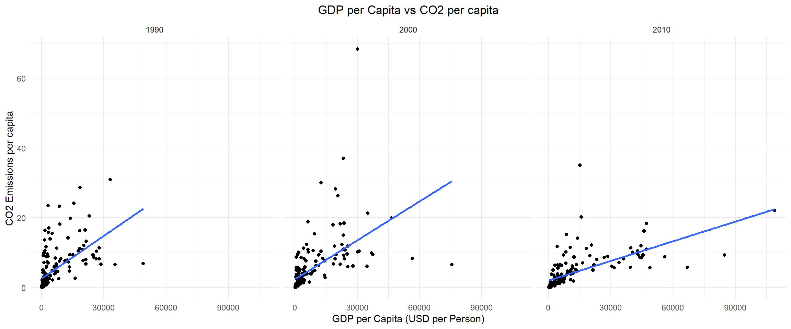
Figure 6: Correlación GDP per Capita vs Emisiones de CO2 per Capita
Analisis Regional
gdp_joined_data %>%
inner_join(country_data, by="Country code") %>%
select(-`Country name`) -> gdp_joined_data2
gdp_joined_data2 %>%
group_by(Region, Year) %>%
summarize(total_emission = sum(`Annual CO2 emissions`), total_gdp = sum(GDP))-> gdp_joined_data_regionTrasladamos nuestro análisis a nivel regional, donde podemos evidenciar 3 principales actores en la producción de emisiones (7) y desarrollo económico (8) a nivel global:
- Pacifico y Asia Oriental
- Europa y Asia Central
- América del Norte
La tendencia más notable corresponde a Asia Oriental y el Pacífico, cuyas emisiones crecen de forma exponencial —de aproximadamente 4.5 × 10⁹ a 1.2 × 10¹⁰ toneladas— mientras su PIB se expande significativamente, aunque sin alcanzar los niveles absolutos de Europa o América del Norte hacia 2010. Esta asimetría revela una estructura productiva con alta producción de carbono, propia de economías en fase de industrialización acelerada. Europa y Asia Central, en contraste, muestra una reducción de emisiones durante los años noventa seguida de estabilización, mientras mantiene el mayor PIB regional del período. América del Norte exhibe emisiones crecientes de forma estable con leve decrecimiento hacia 2010. Las regiones de menor desarrollo —América Latina, Asia del Sur, Oriente Medio y África Subsahariana— registran emisiones absolutas bajas pero con tendencias ascendentes moderadas, anticipando que su industrialización futura será un factor determinante en las trayectorias globales de carbono.
El análisis conjunto permite establecer tres conclusiones centrales. Primero, existe una correlación positiva entre industrialización acelerada e incremento de emisiones, siendo Asia Oriental la evidencia más contundente del período. Segundo, las economías post-industriales exhiben un desacoplamiento progresivo entre PIB y emisiones, pero manteniendo una participación considerable en el total global. Tercero, la intensidad de carbono —emisiones por unidad de PIB— resulta más informativa que las emisiones absolutas para evaluar la eficiencia ambiental de una economía, ya que niveles bajos de emisión pueden reflejar simplemente un bajo nivel de desarrollo y no una transición hacia modelos productivos más limpios.
ggplot(gdp_joined_data_region, aes(x = Year, y = total_emission, color = Region)) +
geom_line(size = 1) +
labs(
title = "Histórico de Emisiones de CO2 por Región",
x = "Año",
y = "Emisiones de CO2 (toneladas)",
color = "Región"
) +
theme_minimal()+
theme(plot.title = element_text(hjust = 0.5))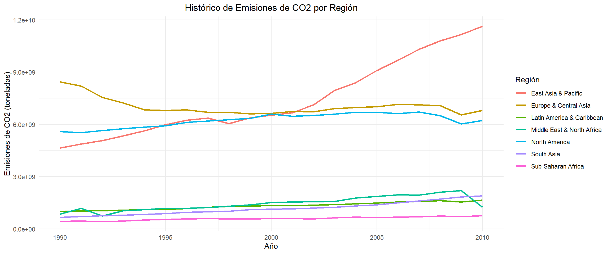
Figure 7: Emisiones por Región
ggplot(gdp_joined_data_region, aes(x = Year, y = total_gdp, color = Region)) +
geom_line(size = 1) +
labs(
title = "Histórico de PIB por Región",
x = "Año",
y = "PIB (USD)",
color = "Región"
) +
theme_minimal()+
theme(plot.title = element_text(hjust = 0.5))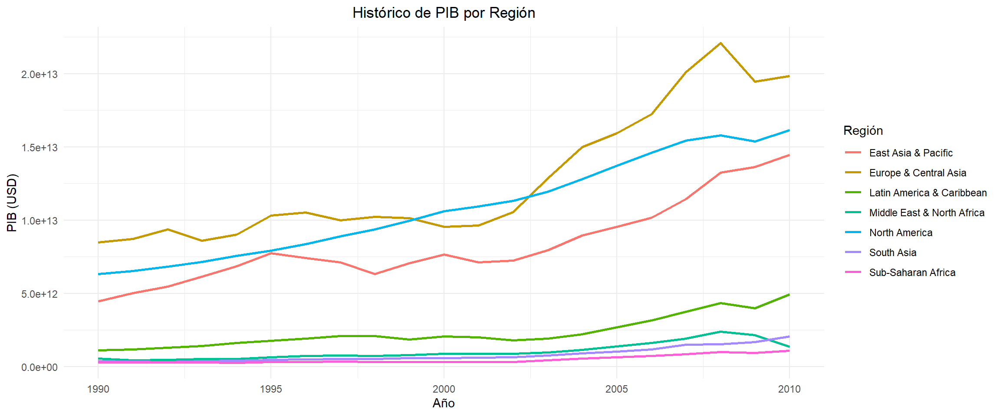
Figure 8: PIB por Región
Finalmente, analizamos la composición por niveles de ingreso de los países en cada región (9), ordenadas de mayor a menor participación de economías de alto ingreso. Observamos que las regiones con mayor proporción de países de alto ingreso (OCDE) son las 3 regiones que encontramos contruyen mayoritariamente a la emisión de CO2. La información provista por esta gráfica se alinea con lo visto en (7) y (8).
country_data %>%
filter(Region != "Aggregates") %>%
count(Region, `Income group`, name = "n_count") -> income_group_per_region
region_order <- country_data %>%
group_by(Region) %>%
summarise(
total = n(),
high_income = sum(`Income group` == "High income: OECD", na.rm = TRUE),
prop_high = high_income / total,
.groups = "drop"
)
plot_data <- income_group_per_region %>%
left_join(region_order, by = "Region") %>%
mutate(Region = reorder(Region, prop_high))
ggplot(plot_data,
aes(x = Region, y = n_count, fill = `Income group`)) +
geom_bar(stat = "identity") +
coord_flip() +
labs(
x = "Región",
y = "Número de Países",
title = "Grupo de Ingresos por región"
) +
theme_minimal()+
theme(plot.title = element_text(hjust = 0.5))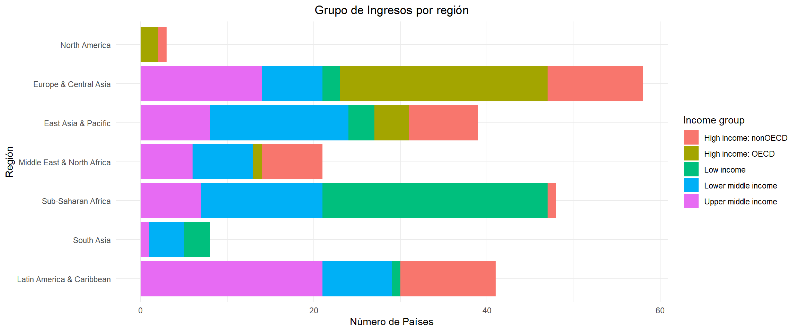
Figure 9: Distribución económica por región
Analisis de distribución de emisiones regional y económica
Generamos 2 diagramas de caja (boxplots) 7 y 8 con el objetivo de profundizar en la heterogeneidad interna de las emisiones de CO₂, desagregando la información por grupo de ingreso y por región respectivamente. Para facilidad de nuestro análisis y evitar incorporar ruido por cambios temporales, filtramos la información para el año 2010.
Por grupo de ingreso, el resultado más destacado es la elevada dispersión interna del grupo de alto ingreso OCDE, cuya caja intercuartílica se extiende notablemente por encima de los demás grupos, con un valor atípico (outlier) que supera los 5 × 10⁹ toneladas —atribuible presumiblemente a Estados Unidos o un emisor de escala comparable. Los grupos de ingreso bajo e ingreso medio-bajo presentan cajas prácticamente colapsadas sobre el eje horizontal, con medianas cercanas a cero y outliers aislados que representan países de gran población como India o Nigeria. El grupo de ingreso medio-alto muestra un outlier superior cercano a los 8 × 10⁹ toneladas, el más alto del gráfico, consistente con la posición de China en ese grupo de clasificación para 2010. Este hallazgo indica algo: las mayores emisiones absolutas en 2010 no provienen de los países de mayor ingreso per cápita, sino de economías en transición de ingreso medio-alto con grandes bases industriales y poblacionales.
Por región, el contraste es aún más pronunciado. América del Norte exhibe la distribución más amplia con diferencia: su caja intercuartílica abarca el rango entre aproximadamente 2 × 10⁹ y 5 × 10⁹ toneladas, con una mediana en torno a 3 × 10⁹, lo que refleja que incluso el país mediano de esa región —compuesta por muy pocos países de alta emisión individual— genera volúmenes extraordinariamente elevados. Asia Oriental y el Pacífico presenta una caja comprimida pero con un outlier superior cercano a los 8 × 10⁹ toneladas, el valor más alto del gráfico, coherente con la presencia de China como emisor dominante dentro de una región por lo demás heterogénea. Todas las demás regiones —Europa y Asia Central, América Latina, Oriente Medio, Asia del Sur y África Subsahariana— muestran distribuciones extremadamente comprimidas con medianas próximas a cero, indicando que la gran mayoría de sus países son emisores menores en términos absolutos, aunque con outliers aislados de relevancia.
La lectura conjunta de ambos gráficos refuerza una conclusión: la distribución de emisiones de CO4 es profundamente asimétrica tanto entre regiones como dentro de los grupos de ingreso, con un número reducido de países —caracterizados por grandes economías industriales, alta población o abundancia de recursos fósiles— concentrando la mayor parte de las emisiones globales. Esta concentración implica que las políticas de mitigación climática tienen un potencial de impacto desproporcionadamente mayor si se focalizan en dichos emisores dominantes, independientemente de su clasificación regional o de ingreso.
ggplot(gdp_joined_data2[gdp_joined_data2$Year == 2010,], aes(x = factor(Region), y = `Annual CO2 emissions`, fill = Region)) +
geom_boxplot() +
labs(
x = "Región",
y = "Emisiones de CO2",
title = "Distribución de las emisiones de CO2 por región en 2010"
) +
theme_minimal() +
theme(
axis.text.x = element_blank(),
axis.ticks.x = element_blank(),
plot.title = element_text(hjust = 0.5)
)+
theme()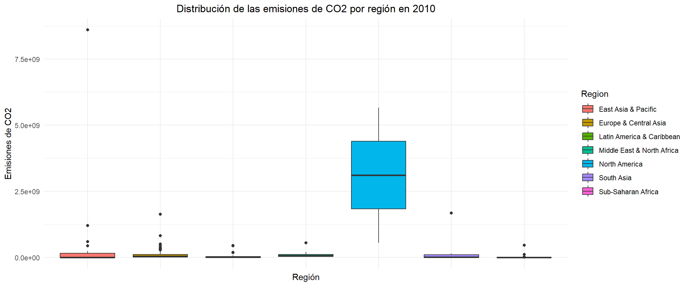
Figure 10: Distribución de emisiones por región
ggplot(gdp_joined_data2[gdp_joined_data2$Year == 2010,], aes(x = factor(`Income group`), y = `Annual CO2 emissions`, fill = `Income group`)) +
geom_boxplot() +
labs(
x = "Grupo Económico",
y = "Emisiones de CO2",
title = "Distribución de las emisiones de CO2 por grupo económico en 2010"
) +
theme_minimal() +
theme(
axis.text.x = element_blank(),
axis.ticks.x = element_blank(),
plot.title = element_text(hjust = 0.5)
)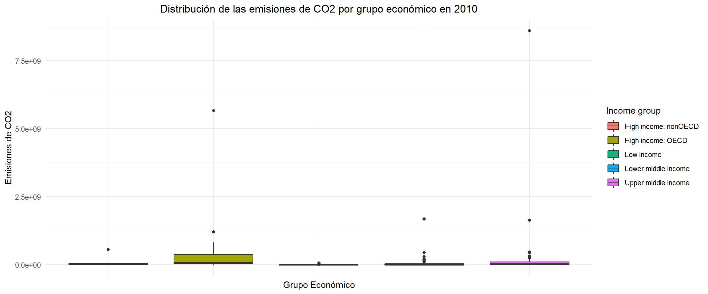
Figure 11: Distribución de emisiones por grupo económico
Análisis de Proyecciones
El conjunto de datos obtenido de (World Bank, 2023) nos provee proyecciones de cambio de temperatura y precipitaciones para cada país durante el perio 2045 a 2065. Esta información viene un campo de texto en formato ‘Bajo a Alto’. Para nuestro análisis, se extrajó ambos niveles para cada país y se promediaron, de forma que se obtuvo una proyección promedio de cambio de temperatura y precipitación para cada país.
Proyección de cambio de temperatura
Analizamos la proyección de cambio de temperatura, desagregada por ingreso y por región. El rango general de las proyecciones se sitúa entre aproximadamente 1.0 °C y 3.1 °C, con la mayoría de las medianas concentradas en torno a 2.2–2.5 °C, lo que indica que el calentamiento proyectado es un fenómeno de alcance global sin excepción regional significativa.
- Por región
Las diferencias por región son más pronunciadas. Asia Oriental y el Pacífico presenta la mediana más baja (~1.7 °C) y la distribución más comprimida, posiblemente asociada a efectos moderadores de la circulación oceánica en las zonas costeras e insulares de la región. En el extremo opuesto, Oriente Medio y África del Norte, América del Norte y Asia del Sur exhiben las medianas más elevadas (~2.5 °C), con cajas amplias que denotan variabilidad interna significativa entre países. África Subsahariana y Europa y Asia Central muestran medianas intermedias (~2.3 °C) pero con bigotes que se extienden hasta valores superiores a 3.0 °C, indicando que algunos países dentro de estas regiones podrían experimentar calentamientos considerablemente más severos. América Latina y el Caribe presenta la mayor dispersión interna de todas las regiones, con una caja que abarca desde aproximadamente 1.6 °C hasta 2.3 °C, coherente con la diversidad climática de un territorio que incluye desde zonas tropicales hasta regiones subpolares.
projected_temperature_change <- climate_change_data %>%
filter(`Series code` == "EN.CLC.PCAT.C") %>%
select(`Country code`, `Country name`, `2011`) %>%
mutate(
temp = if_else(str_detect(`2011`, " to "),
`2011`,
NA_character_)
) %>%
separate(
temp,
into = c("Lowest", "Highest"),
sep = " to "
) %>%
mutate(
Lowest = as.numeric(Lowest),
Highest = as.numeric(Highest),
Mean = rowMeans(cbind(Lowest, Highest), na.rm = TRUE)) %>%
select(-`2011`, -Lowest, -Highest)
projected_precipitation_change <- climate_change_data %>%
filter(`Series code` == "EN.CLC.PCPT.MM") %>%
select(`Country code`, `Country name`, `2011`) %>%
mutate(
temp = if_else(str_detect(`2011`, " to "),
`2011`,
NA_character_)
) %>%
separate(
temp,
into = c("Lowest", "Highest"),
sep = " to "
) %>%
mutate(
Lowest = as.numeric(Lowest),
Highest = as.numeric(Highest),
Mean = rowMeans(cbind(Lowest, Highest), na.rm = TRUE)) %>%
select(-`2011`, -Lowest, -Highest)
country_data %>%
inner_join(projected_temperature_change, by="Country code") %>%
select(-`Country name.y`, -`Lending category`) %>%
inner_join(projected_precipitation_change, by="Country code") %>%
select(-`Country name`) %>%
drop_na() %>%
rename(
`Country Code` = `Country code`,
`Temperature change` = Mean.x,
`Precipitation change` = Mean.y
) -> projected_climate_change_country_dataggplot(projected_climate_change_country_data, aes(x = factor(`Region`), y = `Temperature change`, fill = `Region`)) +
geom_boxplot() +
labs(
x = "Región",
y = "Cambio Proyectado de Temperatura Media (ºC)",
title = "Distribución del Cambio Proyectado de Temperatura Media (2045- 2065) por Región"
) +
theme_minimal() +
theme(
axis.text.x = element_blank(),
axis.ticks.x = element_blank(),
plot.title = element_text(hjust = 0.5)
)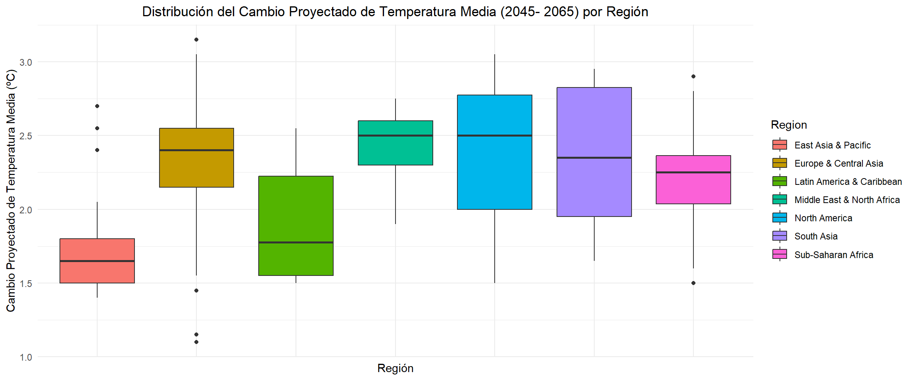
Figure 12: Proyección de cambio de temperatura por región
- Por Grupo Ecónomico
Las distribuciones por grupo económico son notablemente similares en sus medianas, oscilando entre 1.8 °C (alto ingreso no-OCDE) y 2.3 °C (bajo ingreso, ingreso medio-bajo e ingreso medio-alto). Sin embargo, la amplitud de las cajas intercuartílicas varía: los grupos de ingreso bajo e ingreso medio presentan mayor dispersión interna, reflejando la heterogeneidad geográfica de los países que los integran. El hallazgo analíticamente más relevante es la ausencia de una gradiente clara entre nivel de ingreso y magnitud del calentamiento proyectado: los países de bajo ingreso —que históricamente han contribuido de forma marginal a las emisiones acumuladas— enfrentarán incrementos de temperatura comparables o superiores a los de las economías que han sido responsables de la mayor parte de las emisiones históricas.
ggplot(projected_climate_change_country_data, aes(x = factor(`Income group`), y = `Temperature change`, fill = `Income group`)) +
geom_boxplot() +
labs(
x = "Grupo Económico",
y = "Cambio Proyectado de Temperatura Media (ºC)",
title = "Distribución del Cambio Proyectado de Temperatura Media (2045- 2065) por Grupo Económico"
) +
theme_minimal() +
theme(
axis.text.x = element_blank(),
axis.ticks.x = element_blank(),
plot.title = element_text(hjust = 0.5)
)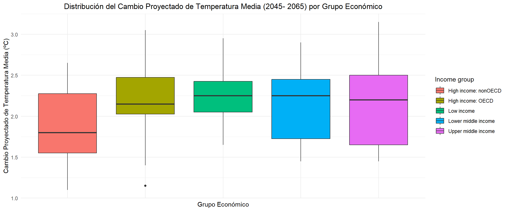
Figure 13: Proyección de cambio de temperatura por grupo ecónomico
La lectura conjunta de ambos gráficos conduce a dos conclusiones de orden superior. Primero, el calentamiento proyectado es independiente del nivel de responsabilidad histórica en las emisiones: regiones de bajo ingreso y baja industrialización soportarán incrementos de temperatura equivalentes a los de las economías más emisoras, lo que refuerza el argumento de justicia climática en los marcos de negociación internacional. Segundo, la variabilidad intra-regional e intra-grupal es tan o más relevante que las diferencias entre categorías, sugiriendo que las políticas de adaptación climática deben diseñarse atendiendo a vulnerabilidades específicas de cada país, más que a clasificaciones de ingreso o región.
Proyección de cambio en precipitaciones
A diferencia de las proyecciones de temperatura —donde todas las regiones convergen hacia incrementos positivos— los gráficos de precipitación revelan una dinámica fundamentalmente distinta: el signo del cambio proyectado varía según la región, configurando un escenario en el que el calentamiento global produce simultáneamente exceso hídrico en algunas zonas y déficit severo en otras. Este patrón constituye uno de los impactos más complejos del cambio climático desde el punto de vista de la adaptación.
- Por Región
Por región, la heterogeneidad es marcada. Asia Oriental y el Pacífico presenta la mediana más alta (~+50 mm) y la mayor dispersión positiva, con outliers que superan los +300 mm, indicando que una fracción de sus países podría experimentar incrementos de precipitación muy significativos, probablemente asociados a la intensificación de sistemas oceánicos y ciclónicos. Asia del Sur y América del Norte también proyectan medianas positivas (~+50 mm y ~+30 mm respectivamente), consistentes con el reforzamiento de regímenes de precipitación en latitudes medias y subtropicales húmedas. En contraste, América Latina y el Caribe, Europa y Asia Central, y especialmente Oriente Medio y África del Norte muestran medianas negativas o cercanas a cero, con cajas que se extienden predominantemente por debajo del eje, señalando tendencias hacia la aridización. África Subsahariana presenta una distribución centrada en torno a cero pero con alta dispersión en ambas direcciones, reflejando la coexistencia de zonas con incrementos y zonas con déficits dentro de una región geográficamente extensa y climáticamente diversa.
ggplot(projected_climate_change_country_data, aes(x = factor(`Region`), y = `Precipitation change`, fill = `Region`)) +
geom_boxplot() +
labs(
x = "Región",
y = "Cambio Proyectado de Precipitación Promedio (mm)",
title = "Distribución del Cambio Proyectado de Precipitación Promedio (2045- 2065) por Región"
) +
theme_minimal() +
theme(
axis.text.x = element_blank(),
axis.ticks.x = element_blank(),
plot.title = element_text(hjust = 0.5)
)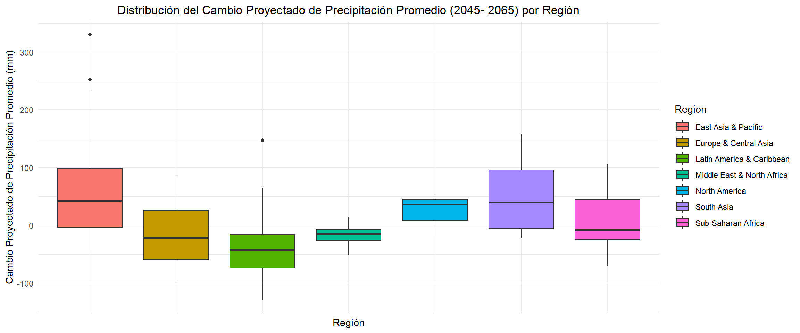
Figure 14: Proyección de cambio de precipitaciones por región
- Por grupo económico
Por grupo de ingreso, el patrón más relevante es que el grupo de alto ingreso no-OCDE presenta una mediana claramente negativa (~−40 mm), coherente con la concentración de países de este grupo en zonas geográficas áridas o semiáridas como el Golfo Pérsico y partes de Europa meridional. El grupo de alto ingreso OCDE muestra una mediana levemente positiva con dispersión moderada, mientras que los grupos de ingreso bajo e ingreso medio-bajo exhiben distribuciones más amplias con medianas próximas a cero, reflejando nuevamente la heterogeneidad geográfica de sus integrantes. Los outliers más extremos —superando los +300 mm— se concentran en los grupos de ingreso medio-bajo y medio-alto, correspondientes a países tropicales de gran extensión territorial.
ggplot(projected_climate_change_country_data, aes(x = factor(`Income group`), y = `Precipitation change`, fill = `Income group`)) +
geom_boxplot() +
labs(
x = "Grupo Económico",
y = "Cambio Proyectado de Precipitación Promedio (mm)",
title = "Distribución del Cambio Proyectado de Precipitación Promedio (2045- 2065) por Grupo Económico"
) +
theme_minimal() +
theme(
axis.text.x = element_blank(),
axis.ticks.x = element_blank(),
plot.title = element_text(hjust = 0.5)
)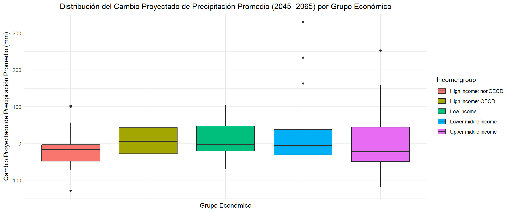
Figure 15: Proyección de cambio de precipitaciones por grupo económico
Las implicaciones analíticas de estos gráficos son significativas en dos dimensiones. Primero, la precipitación introduce una asimetría de impacto climático que la temperatura no captura: regiones que ya enfrentan estrés hídrico —como Oriente Medio, partes de América Latina y el Mediterráneo— verán agravada su situación, mientras que otras experimentarán riesgos asociados al exceso hídrico, como inundaciones e infraestructura desbordada. Segundo, y en articulación con los análisis previos, los países de menor ingreso que proyectan reducciones de precipitación enfrentan la combinación más adversa: mayor calentamiento relativo, menor capacidad adaptativa y potencial contracción de sus bases agrícolas, todo ello siendo responsables de una fracción ínfima de las emisiones históricas acumuladas que originan dichos impactos.